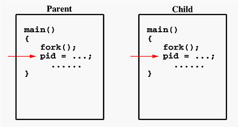

Processes
OS Laboratory Team
Fall 2018The Process
A program in execution
Memory Layout
- Text section
- The executable code
- Data section
- Global variables
- Heap section
- Memory that is dynamically allocated during program run time
- Stack section
- Temporary data storage when invoking functions (such as function parameters, return address, and local variables)

Let's code :)
#include <stdlib.h>
#include <stdio.h>
int x;
int y = 15;
int main(int argc, char *argv[]) {
int *values;
int i;
values = (int *) malloc(sizeof(int) * 5);
for (i = 0; i < 5; i++) {
values[i] = i;
}
return 0;
}
# the size (in bytes) of some of these sections
$ size program_name
Process State
- New
- The process is being created
- Running
- Instruction are being executed
- Waiting
- The process is waiting for some event to occur (such as an I/O completion or reception of a signal)
- Ready
- The process is waiting to be assigned to a processor
- Teminated
- The process has finished execution

Operations on Processes
The processes in the must systems can execute concurrently, and they may be created and deleted dynamically.
Concurrent vs Parallel
Based on Stackoverflow answer
If you program using concurrent programming, it's not necessarily going to be executed as such (parallel execution), since it depends on the machine.
-- -- --
/ \
---- -- -- -- -- ----
------
/ \
--------------
Let's code :)
# -l Display information associated with the following keywords: uid, pid, ppid, ...
# -e Display information about other uesrs' processes, including those without controlling terminals.
ps -el
pstree
When a process creates a new process, two possibilities for execution
- The parent continues to execute concurrently with its children
- The parent waits until some or all of its chidlren have terminated
There are also two address-space possibilities for the new process
- The child process is a duplicate of the parent process
- The child process has a new program loaded into it
Let's code :)
- fork
- System call fork() is used to create processes. It takes no arguments and returns a process ID
- The purpose of fork() is to create a new process, which becomes the child process of the caller.
- vfork
- exec
- wait
#include <stdio.h>
#include <unistd>
#define MAX_COUNT 200
#define BUF_SIZE 100
int main(int argc, const char *argv[]) {
pid_t pid;
int i;
char buf[BUF_SIZE];
fork();
pid = getpid();
for (i = 1; i ≤ MAX_COUNT; i++) {
sprintf(buf, "This line is from pid %d, value = %d\n", pid, i);
write(1, buf, strlen(buf));
}
fork() system call
